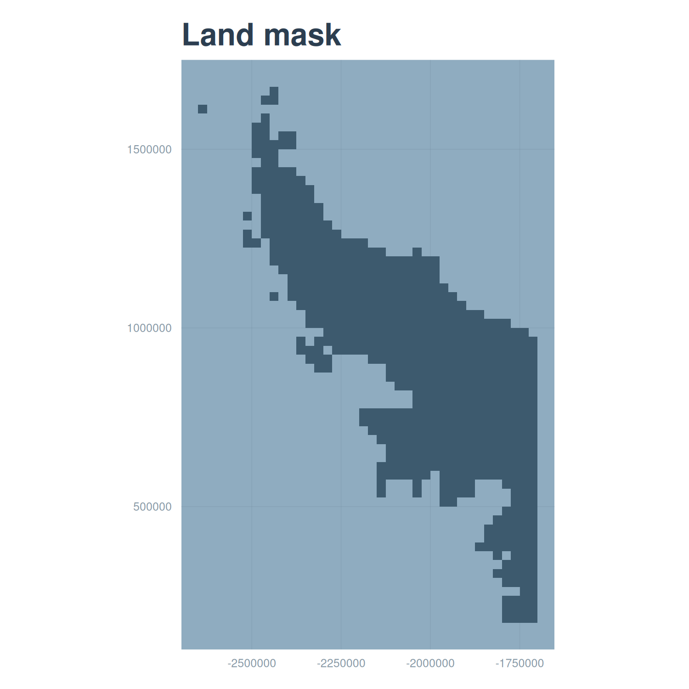

source(here::here("R", "setup.R"))
paths <- sih_paths()4 Building the land mask
A land mask is a raster that marks which cells are land rather than ocean. We need one for two reasons. It lets us draw land as a solid backdrop in the difference maps later (Chapter 7), so the eye is not distracted by color in places where sea-ice concentration is meaningless. It also gives us an explicit record of which cells are land, separate from cells that are merely missing on a given day, which both end up as NA once a granule is cleaned.
The convenient thing about the Sea Ice Index encoding is that it already tells us where land is. The same flag codes we set to NA during cleaning identify land (2540) and coastline (2530), so we can derive the mask straight from a raw granule rather than going to an external coastline dataset.
4.1 Deriving the mask from the flag codes
Read the raw granule again, keep only the land and coast codes, and clip to the study area.
raw_file <- list.files(file.path(paths$base, "raw_example"),
pattern = "\\.tif$", full.names = TRUE)[1]
raw <- terra::rast(raw_file)
study_area <- terra::vect(paths$study_area)
# Land (2540) and coastline (2530) -> 1; everything else -> NA.
land <- terra::ifel(raw == 2540 | raw == 2530, 1, NA)
land <- terra::crop(land, study_area)
landclass : SpatRaster
size : 87, 64, 1 (nrow, ncol, nlyr)
resolution : 25000, 25000 (x, y)
extent : -3300000, -1700000, 175000, 2350000 (xmin, xmax, ymin, ymax)
coord. ref. : WGS 84 / NSIDC Sea Ice Polar Stereographic South (EPSG:3976)
source(s) : memory
varname : S_20130101_concentration_v3.0
name : S_20130101_concentration_v3.0
min value : 1
max value : 1That single-layer raster, land cells equal to 1 and everything else NA, is the mask. The sample already ships the same thing as data/sample/land_mask/land_mask.tif, so in the chapters that follow we load that file rather than re-deriving it.
land_df <- subset(rast_to_df(land, "land"), !is.na(land))
ggplot(land_df, aes(x, y)) +
geom_tile(fill = COLORS$coastline,
width = terra::res(land)[1], height = terra::res(land)[2]) +
coord_equal() +
labs(title = "Land mask", x = NULL, y = NULL) +
theme_bri_map()
4.2 A note on resolution
This mask is at the 25 km Sea Ice Index resolution, which is the resolution it was derived from. When we use it as a backdrop under the 12.5 km harmonized maps it reads as a slightly blockier coastline than the data it sits behind, which is cosmetically fine for a background layer. If you wanted a crisp 12.5 km mask you could derive it instead from an AMSR granule, whose land flag (code 120) plays the same role, or resample this one onto the finer grid. For the validation figures in this tutorial the 25 km mask is sufficient.
With both products cleaned and a land mask in hand, we can bring the two records onto a common grid and pair them, which is the subject of the next chapter.